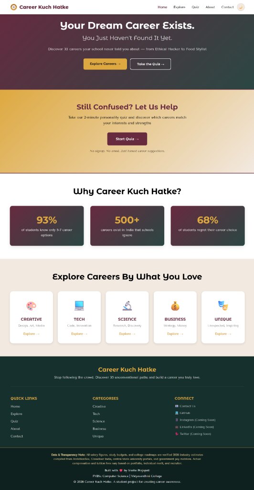
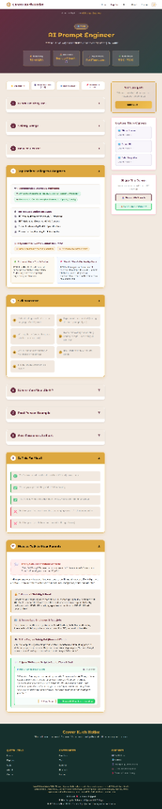
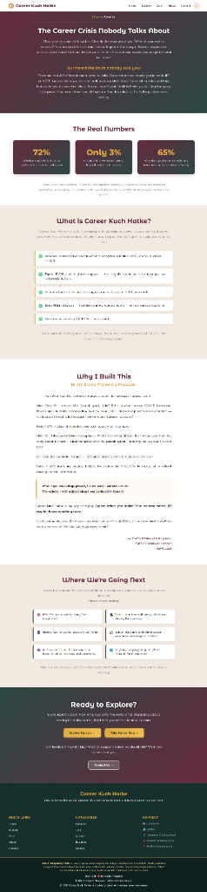
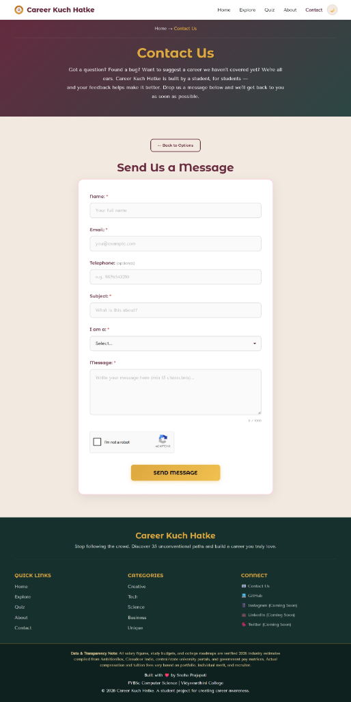

An Interactive Unconventional Career Guidance Web Platform with Administrative Management Portal
| Candidate Name: | Sneha Prajapati | Academic Class: | Second Year B.Sc. Computer Science |
| Course / Subject: | Field Project (Computer Science) | Semester / Stream: | Semester III — Computer Science |
| Live Application URL: | https://career-kuch-hatke.infinityfreeapp.com | ||
| Source Code Repository: | https://github.com/snehaprajapati-dev/career-kuch-hatke | ||
In the Indian educational system, over eighty percent of secondary and higher-secondary students are directed toward a restrictive cluster of traditional careers—principally Engineering, Medicine, Civil Services, or Banking. This narrow concentration routinely leads to severe academic anxiety, high institutional dropout rates, and widespread career misalignment, while emerging creative and technological domains face severe talent deficits.
Career Kuch Hatke is an interactive, responsive web application engineered to bridge this institutional guidance void. It curates 35+ verified unconventional career pathways categorized across Creative, Tech, Science, Business, and Unique domains. The platform equips students with transparent 2026 Indian salary packages (entry-level through senior roles), safety-cushion degree alternatives, accredited institutional roadmaps, an interactive career aptitude assessment quiz, a persistent client-side bookmarking engine, and an automated "Talk to Your Parents" conversational pitch generator with direct WhatsApp integration. The project is constructed using HTML5, CSS3, JavaScript (ES6+), PHP 8.2, and MySQL, incorporating a secure administrative backend module, and is deployed live via automated GitHub Actions CI/CD workflows.
The platform employs a decoupled client-server architecture designed for rapid client-side rendering combined with server-side validation and database persistence:
+-------------------------------------------------------------------------------+
| CLIENT-SIDE LAYER (BROWSER) |
| HTML5 (Semantic Web) | CSS3 (Grid & Flexbox Layouts) | JavaScript (ES6+) |
| - Real-Time Keyword & Synonym Search - Aptitude Assessment Quiz Engine |
| - Multi-Category Domain Filtering - LocalStorage Bookmarks Engine |
+-------------------------------------------------------------------------------+
|
HTTP / HTTPS GET & POST
|
+-------------------------------------------------------------------------------+
| APPLICATION SERVER (APACHE / PHP 8.2) |
| - Request Routing & Form Handlers (contact-process.php, suggestion.php) |
| - Administrative Back-Office (login.php, dashboard.php, export.php) |
| - Security Layer: Input Sanitization, XSS Neutralization, Session Auth |
+-------------------------------------------------------------------------------+
|
SQL Query Execution
|
+-------------------------------------------------------------------------------+
| DATABASE LAYER (MySQL 8.x) |
| - Table: contacts (id, name, email, message, submitted_at) |
| - Table: career_suggestions (id, name, email, career_title, description) |
+-------------------------------------------------------------------------------+
| Architecture Layer | Technology Selected | Academic & Technical Implementation Role |
|---|---|---|
| Frontend Structure | HTML5 Semantic | Utilizes semantic tags (<header>, <nav>, <main>, <section>, <footer>) for accessibility and structured DOM traversal. |
| Styling & Presentation | CSS3 (Grid & Flexbox) | Custom CSS variables, fluid responsive layouts, media queries for mobile-first views, and anti-flash theme support. |
| Client-Side Logic | Vanilla JavaScript (ES6+) | DOM event delegation, keyword synonym mapping, quiz vector evaluation, and Web Storage API (localStorage) persistence. |
| Backend Processing | PHP 8.2 (Procedural) | Asynchronous form parsing, regex input validation, XSS prevention, and session-based administrator authentication. |
| Relational Database | MySQL Relational DB | Normalized storage schema for student feedback communications and community career proposals. |
| Deployment Pipeline | GitHub Actions & FTPS | Automated continuous deployment workflow synchronizing repository commits to production Linux hosting. |
The platform comprises six primary user-facing modules and an integrated administrative portal:
To accommodate natural student search phrasing (e.g., searching for "coding" instead of "Ethical Hacker", or "camera" instead of "Wildlife Photographer"), a synonym mapping dictionary was formulated:
const searchKeywordsMap = {
"ethical-hacker": ["coding", "security", "hacking", "cyber", "python", "linux", "bug bounty"],
"food-stylist": ["food", "cooking", "styling", "photography", "chef", "culinary", "baking"],
"ui-ux-designer": ["design", "figma", "app", "website", "interface", "wireframe", "product"]
};
During user keystrokes, the search algorithm iterates over career title text, domain categories, and mapped synonyms. Non-matching card elements are assigned the CSS class .is-hidden (enforced with display: none !important;), dynamically recalculating visible count metrics without initiating server transactions.
To allow students to bookmark careers without mandatory registration friction, a pure client-side storage architecture was implemented using the browser localStorage API:
'ckh_bookmarks'.
To mitigate parental skepticism regarding salary viability and job security, career-detail.js dynamically formats a verifiable 30-second conversational pitch and encodes it into an immediate WhatsApp sharing link:
const shareUrl = "https://career-kuch-hatke.infinityfreeapp.com/career-detail.html?career=" + careerId;
const pitchText = "Namaste Mummy/Papa, I was exploring verified career roadmaps on Career Kuch Hatke:\n\n" +
"Career: " + career.name + "\nSalary Potential: " + career.quickFacts.salary + "\n" +
"Degree Safety Cushion: " + career.quickFacts.degree + "\n" +
"Top Institutes: " + career.indianColleges.slice(0, 2).join(", ") + "\n\n" +
"Please check the complete roadmap here: " + shareUrl;
window.open("https://api.whatsapp.com/send?text=" + encodeURIComponent(pitchText), "_blank");
All incoming POST data received by form processors undergoes strict sanitization and validation prior to database execution to prevent Cross-Site Scripting (XSS) and SQL injection:
$name = htmlspecialchars(strip_tags(trim($_POST['name'])), ENT_QUOTES, 'UTF-8');
$email = filter_var(trim($_POST['email']), FILTER_SANITIZE_EMAIL);
$message = htmlspecialchars(strip_tags(trim($_POST['message'])), ENT_QUOTES, 'UTF-8');
if (!filter_var($email, FILTER_VALIDATE_EMAIL)) {
die(json_encode(["status" => "error", "message" => "Please enter a valid email address."]));
}
To eliminate the visual white flash (FOUC) when loading pages in dark mode, a synchronous micro-script executes in the document <head> before external stylesheet parsing commences:
(function() {
var saved = localStorage.getItem("ckh_theme");
if (saved === "dark") document.documentElement.setAttribute("data-theme", "dark");
})();
The MySQL backend comprises two relational tables supporting user feedback and career submissions:
| Table Name | Field Identifier | Data Type | Constraints & Purpose |
|---|---|---|---|
| contacts Stores student queries |
id |
INT(11) | PRIMARY KEY, AUTO_INCREMENT |
name, email |
VARCHAR(100), VARCHAR(150) | NOT NULL, Validated email address format | |
message |
TEXT | Sanitized inquiry text body | |
submitted_at |
TIMESTAMP | DEFAULT CURRENT_TIMESTAMP | |
| career_suggestions Stores community suggestions |
id |
INT(11) | PRIMARY KEY, AUTO_INCREMENT |
career_title, category |
VARCHAR(150), VARCHAR(50) | Proposed career title and primary domain | |
description |
TEXT | Student explanation of vocational viability |
| Verification Domain | Testing Procedure | Outcome & Status |
|---|---|---|
| Cross-Browser Compatibility | Tested across Chrome 120+, Mozilla Firefox 122+, MS Edge, and Safari Mobile. | Passed: Consistent layout rendering and JavaScript execution. |
| Mobile Responsiveness | Simulated viewport resolutions from 360px (mobile) to 768px (tablet) and 1440px (desktop). | Passed: Adaptive grid collapse, fluid typography, touch-friendly tap targets. |
| Runtime Syntax Integrity | Syntactic validation using Node.js syntax compiler (node -c script.js). |
Passed: Zero syntax errors, unhandled exceptions, or broken promises. |
| Cache Invalidation Protocol | Appended explicit cache-busting query strings (e.g., ?v=6.0) to assets. |
Passed: Guaranteed asset refresh across client browser caches. |
origin/main)..github/workflows/deploy.yml utilizing encrypted secrets (FTP_SERVER, FTP_USERNAME, FTP_PASSWORD) to automate FTPS synchronization to production InfinityFree Linux servers upon every repository push.password_hash) to persist bookmarks across multiple devices.The Career Kuch Hatke project satisfies all academic specifications stipulated for the B.Sc. Computer Science Field Project curriculum. It combines semantic markup, responsive CSS architectures, dynamic JavaScript interaction, persistent browser storage, and secure PHP/MySQL administrative backend workflows into a cohesive, high-utility guidance tool.
Academic References: (1) Glassdoor India & AmbitionBox 2026 Industry Reports; (2) UGC & AICTE Institutional Portals; (3) MDN Web Docs: HTML5 Semantics, CSS Grid & Web Storage APIs.
The following screenshots demonstrate the primary user-facing interfaces and responsive design implemented across the Career Kuch Hatke web platform:

index.html) — Hero banner, comparative dilemma matrix, and career domain navigation.

career-detail.html) — AI Prompt Engineer roadmap, salary packages, and parent pitch tool.

about.html) — Developer background (Sneha Prajapati), statistics, and research methodology.

contact.html) — Interactive student feedback form with input validation.
Note: High-resolution screenshots captured from live production deployment on Google Chrome & mobile viewports.